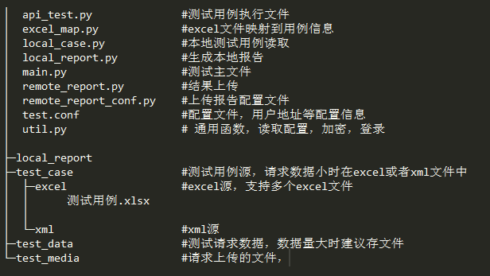

API测试框架¶
框架结构¶
api_test.py¶
CaseRequest类主要函数和功能如下：
- request：若请求发生变化(数据格式)，或者新增请求类型需要在request中进行修改或增加
- run：用例执行及判断，用例中的检查点和检查内容在run中使用
excel_map.py¶
excel文件中的中文名映射为map中的key用于代码中
local_case.py¶
LocalCase加载本地测试用例数据，读取test_case文件夹下的excel和xml文件，根据文件内容生成测试用例，。支持多个文件
local_report.py¶
LocalReport用于生成本地报告，存放到local_report文件夹下
- REPORT_HEAD_TMPL 报告的头部
- REPORT_HEAD_INFO_TMPL 报告的统计信息
- REPORT_MAIN_TMPL 报告主题，用例明细及结果信息使用REPORT_CASE_LINE_TMPL生成并插入
- REPORT_CASE_LINE_TMPL 单个用例信息生成模版
- REPORT_FOOTER_TMPL 报告底部，自定义按钮操作的js
main.py¶
测试框架运行主文件
remote_report.py¶
测试结果上传到服务器，包括创建测试项目和测试用例结果明细
remote_report_conf¶
测试结果上传配置信息：测试项目信息，服务器地址，用户信息等
test.conf¶
测试配置信息：测试的地址，测试使用的用户等信息
util.py¶
通用函数,包括测试用户的登录，若修改请求参数格式，此处同样需要修改
用例设计¶

用例数据¶
用例的执行顺序为从读取文件(支持多文件用例)和在文件中的顺序
- 分类
用例所属大类
- 功能模块
用例所属模块
- 功能点
用例测试功能点
- 用例名称
用例名称
- 有效
用例是否有效，无效则跳过
- 网关地址
针对微服务时的地址前缀，若普通服务可为空
- 地址
和网关地址组合称实际请求地址 ：网管地址/地址
- 请求方法
支持POST,GET,PUT,DELETE方法
- 数据类型
支持form,data,file
- 检查点
支持 包含,不包含,等于,不等于,正则
- 检查内容
检查点根据检查内容判断测试是否成功
- 数据位置
测试数据来源，支持：本地,文件,本地表示数据在excel或者xml文件中，文件表示数据在test_data(需要读取内容后转为json数据)或者test_meida(发送的数据即文件)中读取文件，
- 请求数据
测试数据为本地时的请求数据